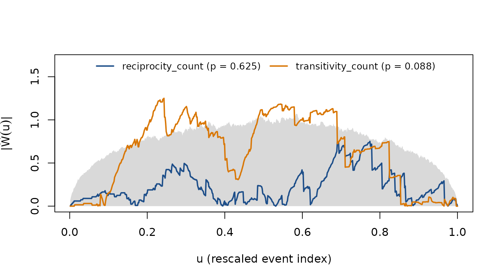
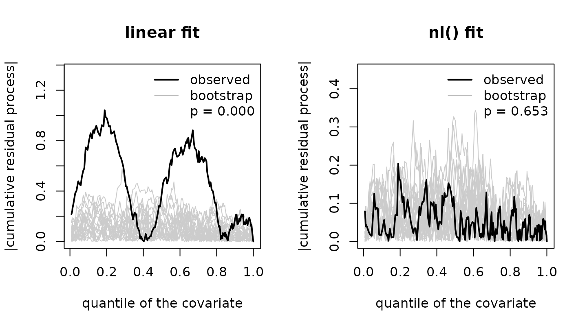
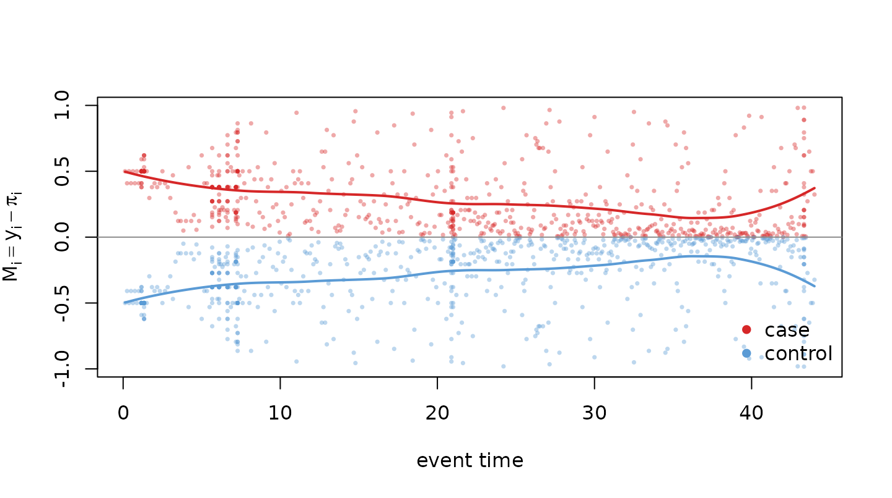

Estimation
amorem’s estimation surface has these layers:
-
Case-control sampling turns a raw event log into a
stratified table that survival / GLM tools can fit directly
(
sample_non_events();widen_case_control()reshapes it to the wide case-1-control form). -
rem()— the unified fitter for (already preprocessed) case-control data: a conditional-logit backend for case-k-control designs and agambackend for case-1-control, with linear / TV / NL / TVNL effects andsummary()/coef()/plot()methods. -
compare_models*helpers evaluate a list of candidate specifications on a single sample and return a tidy AIC table (superseded byrem(), still supported). - Goodness-of-fit tests check whether the selected fit is actually adequate.
The examples on the bundled classroom_events log run
when this page is built, so their output comes from the current version
of the package. Snippets that use data the package does not ship
(lesmis, event_log, native) are
shown without being run.
Case-control sampling
The partial likelihood for a relational event model factors over
events, with each factor a ratio between the firing dyad’s rate and the
sum of rates over the risk set at that moment. The case-control
approximation replaces the full risk set sum with an unbiased
Horvitz-Thompson estimate that uses n_controls sampled
non-firing dyads per case.
Throughout this page we use the bundled classroom_events
log — any event log with time, sender,
receiver columns will do.
library(amorem)
data(classroom_events)
cc <- sample_non_events(classroom_events,
n_controls = 1,
scope = "all",
mode = "one")scope selects which non-firing dyads form the candidate
pool ("all", "appearance", or
"citation"); mode selects whether senders and
receivers are drawn from one actor pool ("one", the
default) or from separate sender and receiver pools ("two",
for bipartite networks).
Risk-set exclusions. Two further controls keep
ineligible dyads out of the candidate pool. exclude_pairs
is a two-column (sender, receiver) table of dyads that are
structurally ineligible — e.g. an alien species’ native range,
forbidden transitions, same-department pairs — and are never sampled as
controls. And under risk = "remove", a dyad firing at the
focal event’s own timestamp is now treated as a concurrent event (not a
valid non-event at that instant) and excluded from its control pool:
cc <- sample_non_events(event_log,
scope = "all",
mode = "two",
risk = "remove", # drops past + concurrent
exclude_pairs = native[, c("species", "region")])For n_controls = 1 the estimator is a no-intercept
binomial GLM on case-minus-control differences (asymptotically
equivalent to the case-control partial likelihood for 1:1 matched
designs). For n_controls > 1 it is a stratified Cox
model via survival::coxph (the same machinery
survival::clogit calls internally). AIC values are
comparable across specifications that share a case-control draw.
endogenous_features() on a case-control table (a 0/1
event column with control rows, as
sample_non_events() returns) builds the network history
from the observed events only: the sampled non-events are scored against
it but never enter it. history_log overrides this with an
explicit history (only rows present in history_log update
the running network state).
For set-valued covariates, the "sender_receivers_set"
statistic returns a list-column: for each row, the set
of receivers the row’s sender has reached before it (e.g. the regions a
species has already invaded). It honours history_log too,
so it is correct for non-events. Downstream, you join it to an external
lookup to build the actual covariate:
feats <- endogenous_features(cc, stats = "sender_receivers_set",
history_log = event_log)
feats$invaded <- Map(setdiff, feats$sender_receivers_set, native_range(feats$sender))
feats$dt <- mapply(min_climatic_diff, feats$invaded, feats$receiver, feats$time)
rem() · unified fitter for preprocessed data
When the covariates have already been computed — e.g. by eventnet
or by endogenous_features() — rem() fits the
model directly from the case-control table, decoupling fitting from
feature computation. It has three backends:
-
method = "clogit"— conditional logistic regression on a case-k-control design (survival::clogit). Strata come fromstratum, or are derived ascumsum(case == 1)for the eventnet blocked layout. Linear terms only. -
method = "nn"— a neural conditional-logistic model on the same case-k-control design asclogit: a multilayer perceptron scores every candidate and the loss is the softmax over each risk set, i.e. exactly the conditional partial likelihood with a learned nonlinear intensity in place of the linear predictor. Prediction-oriented — no coefficient table; it earns its keep when effects interact or bend in ways an additive model cannot capture. Pure R, no extra dependencies. -
method = "gam"— degenerate logistic regression on a case-1-control design (mgcv::gam), supporting smooth effects. In the formula a bare name is a linear effect; wrap it astv(x),nl(x)ortvnl(x)for a time-varying, non-linear, or time-varying-non-linear smooth, orre(x)for an actor (or other grouping) random effect —s(cbind(x_ev, x_nv), by = c(1, -1), bs = "re"), the matched event/control random effect (identified when the event and control differ onx).
# case-20-control conditional logit (e.g. an eventnet-preprocessed log)
fit20 <- rem(IS_OBSERVED ~ individual.activity + dyadic.activity,
data = lesmis, method = "clogit", stratum = "EVENT_INTERVAL")
coef(fit20); summary(fit20)
# case-1-control degenerate logistic with a non-linear effect
w <- widen_case_control(lesmis, stratum = "EVENT_INTERVAL")
fit1 <- rem(~ nl(dyadic.activity), data = w, method = "gam")
plot(fit1) # the fitted smooth panel
# neural conditional logit on the same long case-control log
fitnn <- rem(IS_OBSERVED ~ individual.activity + dyadic.activity,
data = lesmis, method = "nn", stratum = "EVENT_INTERVAL",
nn = nn_control(hidden = c(16, 8), epochs = 300, seed = 1))
summary(fitnn) # architecture, in-sample & held-out concordance
plot(fitnn$fit, type = "pdp") # learned per-feature effect curvesThe nn backend is trained full-batch with Adam,
early-stops on a held-out fraction of strata
(nn_control(validation = , patience = )), and standardizes
features internally. logLik() returns the partial
likelihood at the trained network, so AIC()-style
comparisons against clogit fits are possible (with the
usual caveats about effective degrees of freedom for neural networks).
Because it shares the case-control machinery, everything upstream —
sample_non_events(), feature engineering, stratum handling
— is identical to the other backends.
widen_case_control() reshapes a long case-(k-)control
log into the wide <cov>_ev /
<cov>_nv / d_<cov> form the
gam backend expects (one row per case). Undirected logs
(set-valued senders, no receiver column) are supported throughout.
Column resolution follows the eventnet conventions (x,
d_x, x_ev/x_nv,
transform_x_*, transformed_time).
rem() supersedes compare_models() /
compare_models_smooth() /
compare_models_global(), which remain available and are
documented below.
compare_models() · linear AIC table
A single call evaluates a list of candidate specifications on a shared case-control sample:
data(classroom_events)
compare_models(
classroom_events,
models = list(
count = c("reciprocity_count", "transitivity_count"),
continuous = c("reciprocity_time_recent",
"transitivity_time_recent"),
interrupted = c("reciprocity_time_recent_interrupted",
"transitivity_time_recent_interrupted")),
n_controls = 1, seed = 11)
#> model n_terms n_obs log_lik AIC delta_AIC
#> 1 count 2 691 -280.8221 565.6442 0.0000
#> 2 interrupted 2 691 -412.7271 829.4541 263.8099
#> 3 continuous 2 691 -438.9000 881.8000 316.1557Read this with caution. Without an
actor-heterogeneity correction, *_count statistics also
carry sender and receiver activity: an actor who sends a lot accumulates
large counts, so part of a count specification’s advantage reflects who
is active rather than how the dyad’s history drives its rate. The analyses of bundled event logs
repeat this comparison with a sender frailty.
| Argument | Meaning |
|---|---|
event_log |
data frame with sender, receiver,
time
|
models |
named list of character vectors of stat names |
n_controls |
controls per case (1: GLM; > 1:
stratified Cox) |
scope, mode
|
passed to sample_non_events()
|
random_effects |
"sender" or "receiver" — see below |
half_life |
required when any spec uses an exp-decay stat |
seed |
for the shared case-control draw |
keep_fits |
if TRUE, attach the fitted models as
attr(result, "fits")
|
All three compare_models*() helpers accept
keep_fits = TRUE, which attaches the fitted model objects —
one per spec, named by model — as attr(result, "fits"), so
an individual fit can be pulled out for plotting its estimated
effects:
res <- compare_models_smooth(event_log, models, keep_fits = TRUE)
plot(attr(res, "fits")[["nl"]]) # the chosen spec's smooth panelActor random effects
compare_models() accepts
random_effects = "sender" or "receiver"
(requires n_controls > 1). Internally this injects a
Gamma survival::frailty() term on the requested actor axis
into the stratified Cox fit, matching the convention in Juozaitienė
& Wit (2024).
Two-axis frailty
(random_effects = c("sender", "receiver")) is supported via
coxme::coxme and is the right tool when both sender and
receiver heterogeneity matter; one coxme fit per spec
typically runs in seconds to a minute on Classroom-sized data. Requires
the coxme package (Suggests).
compare_models_smooth() · TV / NL / TVNL effects
Where compare_models() fits a single
coefficient per statistic, compare_models_smooth() lets
each statistic take one of four effect types: linear,
tv (time-varying), nl (non-linear in the
covariate), or tvnl (jointly time-varying non-linear via a
tensor product smooth). Implementation follows Boschi, Lerner & Wit
(2025) Section 3.3:
cms <- compare_models_smooth(
classroom_events,
models = list(
linear = c(reciprocity_time_recent = "linear",
transitivity_time_recent = "linear"),
nl = c(reciprocity_time_recent = "nl",
transitivity_time_recent = "nl"),
tv = c(reciprocity_time_recent = "tv",
transitivity_time_recent = "tv")),
seed = 11, k = 5)
cms
#> model n_terms n_obs log_lik AIC delta_AIC
#> 1 nl 2 691 -415.4388 845.3280 0.00000
#> 2 tv 2 691 -419.6671 855.4971 10.16917
#> 3 linear 2 691 -438.9000 881.8000 36.47202On the recency-time terms of this log the nl specification has the lowest AIC, 10.2 ahead of tv and 36.5 ahead of linear. The case-vs-control matrix design behind these fits is described in the table below.
| Effect | Smooth term |
|---|---|
linear |
single column d_stat = case − control
|
tv |
s(.time, by = d_stat) |
nl |
s(stat_mat, by = I_mat) with
stat_mat = cbind(case, control),
I_mat = cbind(1, -1)
|
tvnl |
te(time_mat, stat_mat, by = I_mat) |
The model is fit by mgcv::gam(method = "REML") with the
degenerate logistic likelihood from Boschi et al. equation 8. AIC values
are directly comparable across specs because every fit shares the same
case-control sample.
Global covariate effects
A global covariate varies in time but is constant across all
interacting pairs at any given instant — temperature, time-of-day, the
residual baseline hazard g_0(t). Standard case-control
partial likelihood cannot identify a global effect, because the focal
event and its controls are evaluated at the same time and the effect
cancels in their rate ratio. The fix of Lembo, Juozaitienė,
Vinciotti & Wit (2025) samples controls from a time-shifted copy
of the event process: every dyad draws one shift
h_sr ~ Exp, event k on (s, r)
moves to t_e = t_k + h_sr, and its control is drawn from
the dyads whose back-shifted time t* = t_e - h_s*r* lies in
the observation window. The control is then evaluated at
t*, so global effects stay in the likelihood. With one
control per event the partial likelihood is a degenerate logistic
GAM.
sample_non_events(shift = "exponential") draws this
sample; each control carries its own time. Compute
endogenous statistics against the real history
(history_log), evaluate the global covariate at each row’s
time, widen, and fit with rem():
g <- data.frame(time = seq(0, max(classroom_events$time), length = 50),
temperature = sin(seq(0, 2 * pi, length = 50)))
at <- function(t) g$temperature[findInterval(t, g$time)]
cc <- sample_non_events(classroom_events, mode = "one", seed = 11,
shift = "exponential")
cc <- endogenous_features(cc, stats = "reciprocity_count",
history_log = classroom_events)
cc$temperature <- at(cc$time)
w <- widen_case_control(cc, covariates = c("reciprocity_count",
"temperature", "time"))
fit <- rem(~ reciprocity_count + nl(temperature, k = 5) + nl(time, k = 5),
data = w, method = "gam")nl(time) is the residual baseline g_0(t).
The shifts have mean shift_scale (default 1,
the paper’s choice) times the average event time, measured from the
start of window. Larger shifts carry more information about
the global effects but leave more events with no dyad in their shifted
risk set; those events get no control and drop out (their strata are
listed in attr(cc, "shift")$uninformative). The paper
reports no effect of shift_scale on the estimates between
0.1 and 100.
compare_models_global() runs the same design for a list
of specifications and ranks them by AIC:
compare_models_global(
classroom_events,
models = list(
dyadic_only = c(reciprocity_count = "linear",
transitivity_count = "linear"),
with_global = c(reciprocity_count = "linear",
temperature = "global_smooth")),
global_covariates = g, seed = 11, k = 5)
#> model n_terms n_obs log_lik AIC delta_AIC
#> 1 with_global 2 690 -335.1267 679.9509 0.00000
#> 2 dyadic_only 2 690 -353.4949 710.9898 31.03884| Effect type | Smooth | Use |
|---|---|---|
global_smooth |
s(x_global) |
generic global covariate |
global_cyclic |
s(x_global, bs = "cc") |
periodic axes (time-of-day) |
global_time |
smooth on time itself | recovers residual g_0(t)
|
A specification whose fit fails returns NA in the table
rather than an error.
Recency preprocessing
transform_recency(delta, half_life = NULL, reference = NULL)
maps non-negative inter-event time gaps to bounded weights via
exp(-delta / (2 m)), with m the median of the
supplied (or reference) gaps. Default median rule sends zero → 1 and the
median gap → exp(-1/2) ≈ 0.607. Useful as a preprocessing
step for global / exogenous covariates fed into
compare_models_global().
Goodness-of-fit · cumulative martingale residual tests
amorem implements the four GOF tests of Boschi & Wit
(2025) on the cumulative martingale residual process
G[γ̂, u]. After normalisation,
Ŵ[γ̂, u] = Ĵ^{-1/2} · n^{-1/2} · G[γ̂, u] converges to a
standard (multivariate) Brownian bridge under correct specification.
m <- c(reciprocity_count = "linear",
transitivity_count = "linear")
gu_r <- gof_univariate(classroom_events, m, "reciprocity_count", seed = 11)
gu_t <- gof_univariate(classroom_events, m, "transitivity_count", seed = 11)
gg <- gof_global(classroom_events, m, seed = 11)
rbind(reciprocity_count = c(statistic = gu_r$statistic, p_value = gu_r$p_value),
transitivity_count = c(statistic = gu_t$statistic, p_value = gu_t$p_value),
global = c(statistic = gg$statistic, p_value = gg$p_value))
#> statistic p_value
#> reciprocity_count 0.7514555 0.62471719
#> transitivity_count 1.2504243 0.08768022
#> global 1.5624453 0.18122308
# 95% pointwise envelope of |Brownian bridge| by simulation
set.seed(99)
u <- gu_r$u; n_grid <- length(u)
env <- replicate(500, {
b <- cumsum(rnorm(n_grid, sd = sqrt(1 / n_grid)))
abs(b - u * b[n_grid])
})
band <- apply(env, 1, stats::quantile, 0.95)
plot(u, abs(gu_r$W), type = "n", ylim = c(0, 1.35 * max(abs(c(gu_r$W, gu_t$W)), band)),
xlab = "u (rescaled event index)", ylab = expression("|" * hat(W)(u) * "|"))
polygon(c(u, rev(u)), c(band, rep(0, n_grid)), col = "grey85", border = NA)
lines(gu_r$u, abs(gu_r$W), lwd = 2, col = "#1d4e89")
lines(gu_t$u, abs(gu_t$W), lwd = 2, col = "#d97706")
legend("top", bty = "n", lwd = 2, col = c("#1d4e89", "#d97706"), horiz = TRUE, cex = 0.85,
legend = sprintf("%s (p = %.3f)", c("reciprocity_count", "transitivity_count"),
c(gu_r$p_value, gu_t$p_value)))
The grey band is the 95% pointwise envelope of a Brownian bridge. For
reciprocity_count the univariate test gives p = 0.625 (not
rejected at the 5% level), for transitivity_count p = 0.088
(not rejected at the 5% level), and the omnibus Cauchy combination gives
p = 0.181 (not rejected at the 5% level). When a component is rejected,
the next step is to enrich that term (try tv,
nl, or a finer variant from the Endogenous catalogue) and
re-test.
| Function | Statistic | p-value |
|---|---|---|
gof_univariate |
T_x = sup_u |Ŵ[u]| |
exact KS series (eq. 15) |
gof_multivariate |
T_ψ = sup_u ‖Ŵ[u]‖² |
n_sim simulated q-dim Brownian bridges |
gof_global |
T_o = mean tan(π(½ − P_l)) |
½ − arctan(T_o)/π (Liu & Xie 2020) |
gof_auxiliary |
T_φ = sup_u |G[u]|/√n |
n_sim standard-normal multipliers |
These tests are complementary to the AIC-based selection performed by
compare_models*(): AIC ranks competing fits, GOF tests
check that the ranked-best fit is actually adequate.
The GoF calibration article
measures the type-I error of gof_univariate() under correct
specification, for count, decayed and recency statistics with and
without a real effect.
Testing a fitted model · gof_rem()
gof_rem() applies the same cumulative-residual idea to a
model fitted with rem(method = "gam"), so it covers smooth
terms and the penalised fit itself. Its null distribution is a
multiplier bootstrap that subtracts the drift from estimating the
coefficients. Three processes are available:
-
test = "time"cumulates the residuals of one term over event time; -
test = "functional_form"cumulates them over the quantiles of the covariate, pooling event and control values, and detects a wrong shape of the effect; -
test = "functional_form_score"weights the same process by the term’s basis (linear andnl()terms).
Below, the true effect of a dyadic covariate is non-linear. The
linear fit and the nl() fit are tested for functional
form:
set.seed(7)
p <- 15; n <- 800
d <- matrix(runif(p * p, 0, 6), p, p); diag(d) <- NA
ids <- which(!is.na(d))
f <- function(x) sin(x) - 0.3 * (x - 3) # true effect
ev <- sample(ids, n, replace = TRUE, prob = exp(f(d[ids])))
nv <- vapply(ev, function(e) sample(ids[ids != e], 1), 0)
w <- data.frame(time = seq_len(n), x_ev = d[ev], x_nv = d[nv])
w$x <- w$x_ev - w$x_nv
fit_lin <- rem(~ x, data = w, method = "gam", time = "time")
fit_nl <- rem(~ nl(x), data = w, method = "gam", time = "time")
g_lin <- gof_rem(fit_lin, "x", test = "functional_form", data = w, seed = 1)
g_nl <- gof_rem(fit_nl, "x", test = "functional_form", seed = 1)
g_lin
#> Martingale-residual GoF test of 'x': functional form
#> sup statistic = 1.0411, p-value = 0.0000 (2000 bootstrap replicates, n = 800)
g_nl
#> Martingale-residual GoF test of 'x': functional form
#> sup statistic = 0.2041, p-value = 0.6535 (2000 bootstrap replicates, n = 800)
par(op)The functional-form test gives p = 0.000 for the linear fit and p =
0.653 for the nl() fit. Under correct specification (linear
truth, linear fit, 100 simulated datasets of 1,500 events) the rejection
rates at the 5% level were 0.050 (time), 0.030
(functional_form) and 0.040
(functional_form_score).
Pointwise diagnostic · martingale_residuals()
For a more granular per-observation view,
martingale_residuals() returns one row per case-control
observation with the residual M_i = y_i − π_i where
π_i = exp(η_i) / (exp(η_case) + exp(η_ctrl)) is the fitted
probability that observation i is the case in its
two-element risk set:
res <- martingale_residuals(
classroom_events,
model = c(reciprocity_count = "linear",
transitivity_count = "linear"),
seed = 7)
# Residuals sum to zero within each (case, control) stratum:
summary(tapply(res$residual, res$stratum, sum))
#> Min. 1st Qu. Median Mean 3rd Qu. Max.
#> -1.110e-16 -5.551e-17 0.000e+00 -3.838e-18 2.776e-17 1.457e-16
role_col <- c(case = "#d62728", control = "#5b9bd5")
plot(res$time, res$residual, pch = 16, cex = 0.5,
col = grDevices::adjustcolor(role_col[res$role], 0.4),
xlab = "event time", ylab = expression(M[i] == y[i] - pi[i]))
abline(h = 0, col = "grey55")
for (r in names(role_col)) {
d <- res[res$role == r, ]
lo <- stats::loess(residual ~ time, data = d, span = 0.4)
o <- order(d$time)
lines(d$time[o], stats::predict(lo)[o], lwd = 2, col = role_col[[r]])
}
legend("bottomright", bty = "n", pch = 16, col = role_col, legend = names(role_col))
The largest within-stratum sum is 1.5e-16 in absolute value, so the zero-sum invariant holds to floating-point precision. A case residual is and its control’s is the mirror image, so the two curves are symmetric about zero by construction. The closer the case curve lies to zero, the more probability the model gives the observed events; a stretch where it rises marks the part of the stream the model fits worst. Currently linear-effect specs only.
The neural backend
amorem ships a neural estimation backend,
rem(method = "nn") (described above): a single multilayer
perceptron scores every candidate in a case-control stratum, trained by
Adam on the conditional-logistic partial likelihood. Because it scores
the full covariate vector jointly, it can capture
interactions between endogenous statistics that the
additive gam backend cannot — at the cost of a coefficient
table (effects are recovered post-hoc via partial-dependence plots) and
of coefficient-level inference: the fitted object carries no parameter
vector and no variance-covariance matrix, so uncertainty comes from the
separate stratum bootstrap of nn_uncertainty(), which bands
the partial-dependence curves and the concordance rather than the
parameters. By default the implementation is pure R with no extra
dependencies, reachable directly from install.packages();
nn_control(engine = "torch") swaps the training loop for
torch autograd, a Suggests dependency
requiring equal-sized strata. This joint-scoring design is what
distinguishes it from DREAM, the deep relational event additive model of
Filippi-Mazzola
& Wit (2024, Social Networks 79), which sums one small
network per covariate; at a single sampled control the two objectives
coincide. See the Validation
experiments for a gradient-correctness check and an
interaction-recovery comparison against the linear backend.
The same training machinery also offers an additive-spline
architecture — the STREAM construction of Filippi-Mazzola & Wit
(2024, JRSS-C 73(4)): each covariate gets a B-spline
expansion, a single linear layer over the concatenated bases yields
sum_k f_k(x_k), and the model is trained by (mini-batch)
stochastic gradient on the exact case-control partial likelihood. This
keeps GAM-style interpretability (per-feature curves via
plot(type = "pdp")) while batch_strata
mini-batching scales to event logs far beyond what an in-memory smooth
fit can hold:
fit_add <- rem(IS_OBSERVED ~ individual.activity + dyadic.activity,
data = lesmis, method = "nn", stratum = "EVENT_INTERVAL",
nn = nn_control(architecture = "additive_spline",
spline_df = 8, batch_strata = 512, seed = 1))
plot(fit_add$fit, type = "pdp") # the fitted additive spline curvesFuture directions. The optional torch
engine and the stratum bootstrap of nn_uncertainty() both
ship as of 1.0.0. What remains open is factor embeddings (a neural
analogue of re()) and coefficient-level inference for
method = "nn" — a variance for the parameters, which a
bootstrap band on a fitted curve is not.